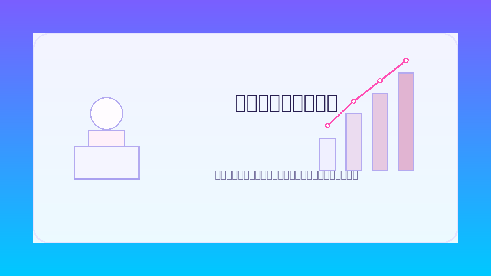

コラム① 最適化
あなたにとって、一番効率の良い勉強方法や通学ルート、部活と勉強の両立の仕方などを、量子コンピュータが瞬時に導き出してくれるかもしれません。 膨大なパターンを一気に試せる量子コンピュータは、「ベストな組み合わせ探し」がとても得意です。
Q-discoveryとは？
Q-discovery は、量子という言葉も知らない人が「なんか面白そう」「意外に身近！」と感じることができる、高校生向けの短期体験プログラムです。
量子の性質をざっくり理解し、すでに実用化されている「量子アニーリング方式」と、将来性豊かな「量子ゲート方式」という2つの量子コンピュータのしくみを、体験を通して学びます。
IT の知識がなくても大丈夫。折り紙やゲームを使ったワーク、手を動かしながらのプログラミング体験、仲間とのアイデアソンを通して、量子の世界を一気に身近に感じられる2日間です。
学んだ仲間と一緒に、「この技術が将来どんなことに役立つだろう？」を考えることで、量子に関する仕事が、あなたの進路の新しい選択肢になるかもしれません。
何ができるの？
あなたにとって、一番効率の良い勉強方法や通学ルート、部活と勉強の両立の仕方などを、量子コンピュータが瞬時に導き出してくれるかもしれません。 膨大なパターンを一気に試せる量子コンピュータは、「ベストな組み合わせ探し」がとても得意です。
量子の世界には、量子テレポーテーションという不思議な現象があります。 将来、離れた場所に一瞬で情報を届けたり、まったく新しい通信の仕組みが生まれたりするかもしれません。 SF で見た世界が、少しずつ現実に近づいています。
エネルギーの使い方、交通の流れ、街づくりの形などを量子コンピュータで最適化できれば、 地球環境への負荷を減らしながら、暮らしやすい社会をつくることができます。 量子の力は、気候変動や渋滞などの大きな課題にも役立つかもしれません。
プログラム内容
量子の基礎から、量子コンピュータの可能性までを、手を動かしながら体験します。 折り紙やオセロなど身近なツールを使って、量子の不思議な性質を「感覚的に」理解できる構成です。
参加者同士でチームになり、「量子でどんなことができそうか？」をテーマにアイデアを深めます。 身近な課題から社会の問題まで、量子技術の活かし方を一緒に考えます。
難しい説明を一気に行うのではなく、ステップを細かく分けて、少しずつ理解できるように設計しています。 折り紙やオセロを使って量子の性質を体感できるので、初めてでも安心して学びを深められます。
量子コンピュータの抽象的な原理も、独自アプリや Google Colaboratory を使い、 「自分で動かして結果を見る」ことで実感できます。 コードを書くことが目的ではなく、「動かせた！」という成功体験を大切にします。
学んだ量子の知識を、社会の課題や身近な問題にどう活かせるか？ 仲間と一緒にアイデアを考えることで、「量子って未来をつくる技術なんだ」という実感につながります。
スケジュール
1月21日（水）～ 3月6日（金）
Webフォームよりお申し込みください。
3月9日（月）～ 3月20日（金）
選考結果をメールにてご連絡します。
3月26日(木) 13:00〜17:30（受付 12:30〜）
量子の基礎と量子コンピュータの世界を、ワークとミニ講義で学びます。（定員 30名）
3月27日(金) 13:00〜17:30（受付 12:30〜）
チームで量子活用アイデアをまとめ、発表します。（定員 30名）
講師
CTO
クリエイティブエンジニア
アシスタントエンジニア
チーフビジネスデザイナー
ビジネスデザイナー
募集概要
よくあるお問い合わせ
A. 参加費用はかかりません。ただし、会場への交通費は各自でご負担ください。
A. 市外在住の高校生も参加は可能です。ただし、募集人数の関係から、川崎市内在住・在学の方を優先的に選考します。